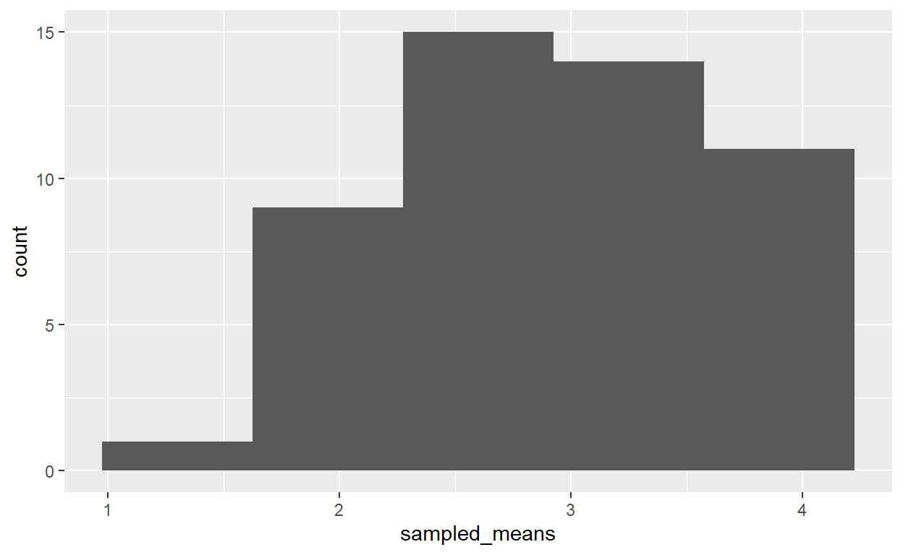
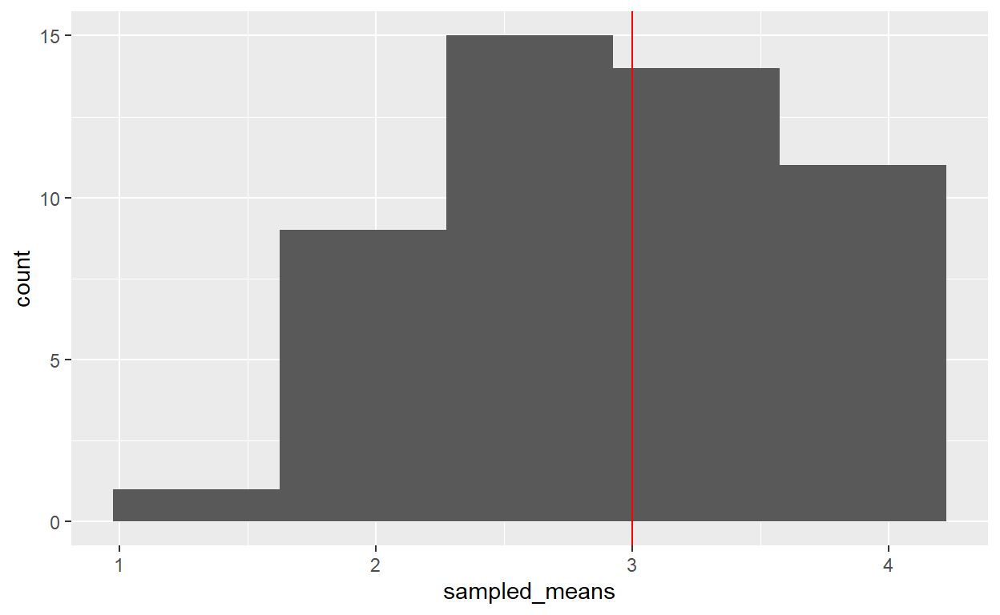
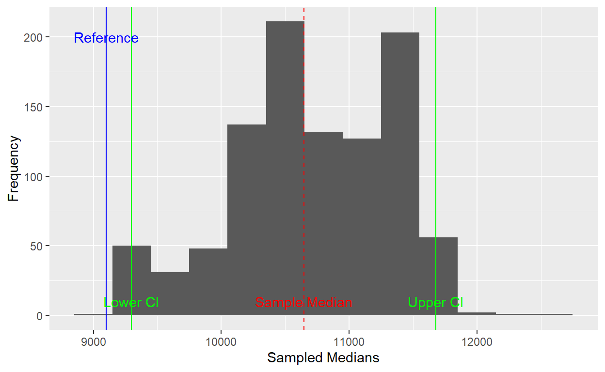
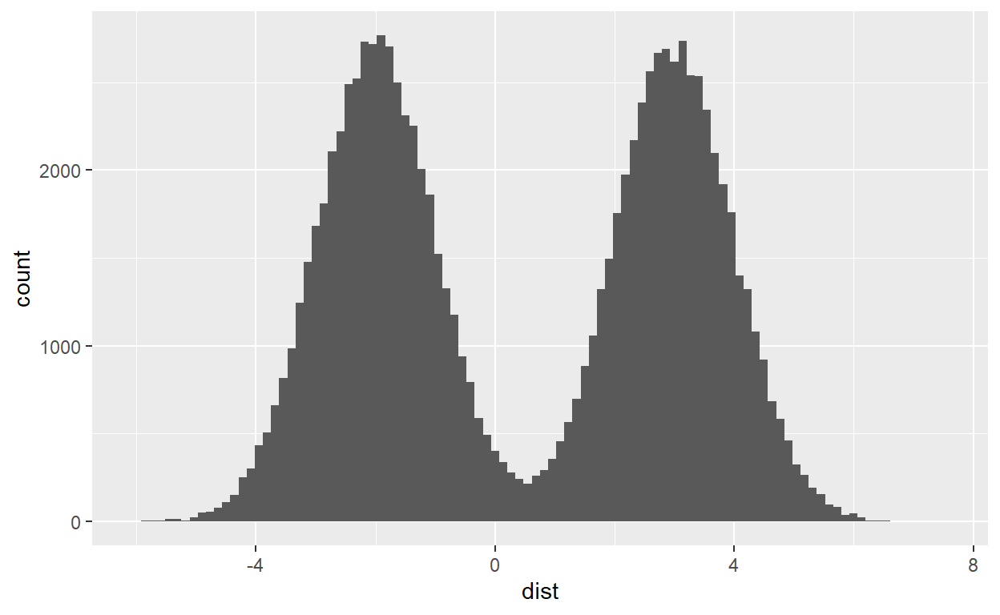
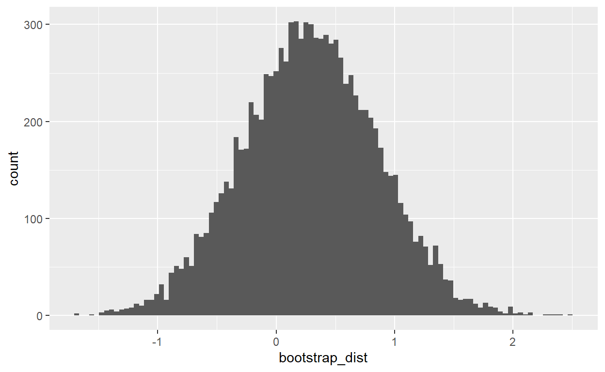
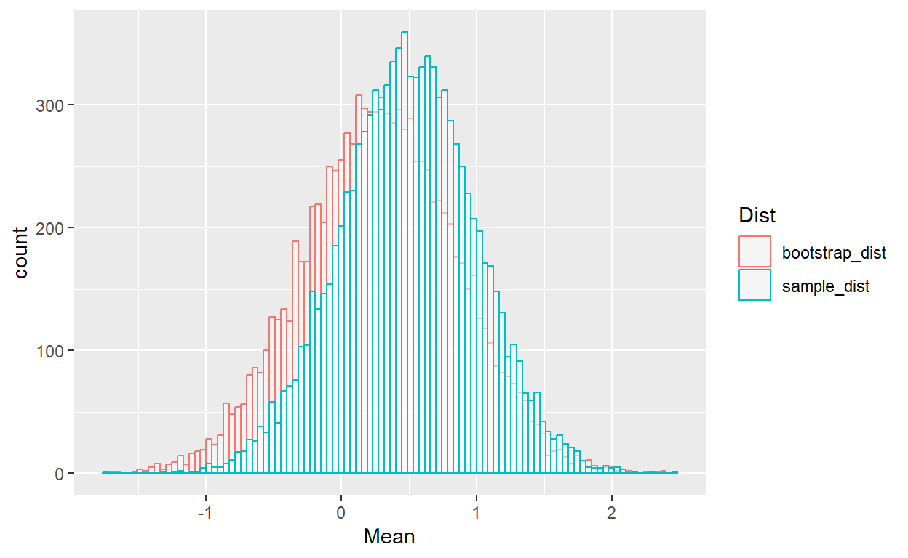
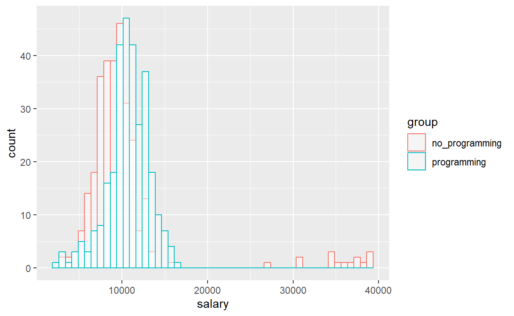
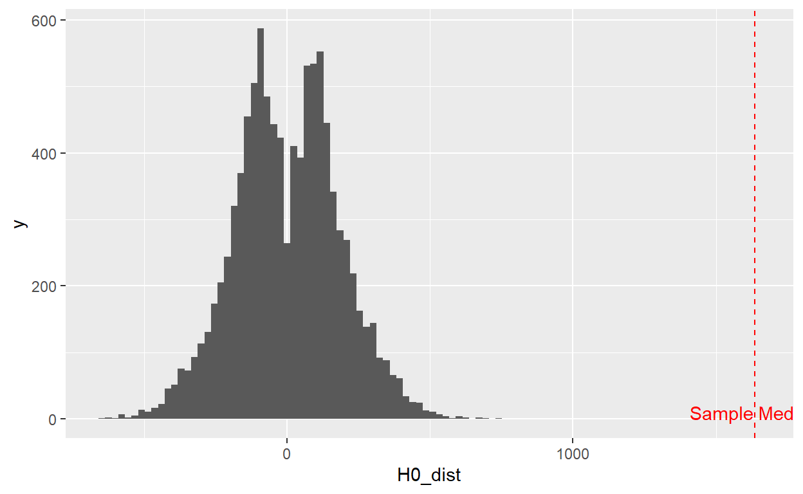
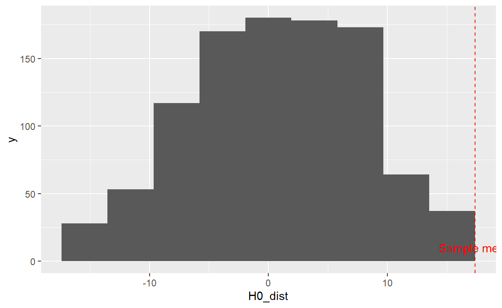
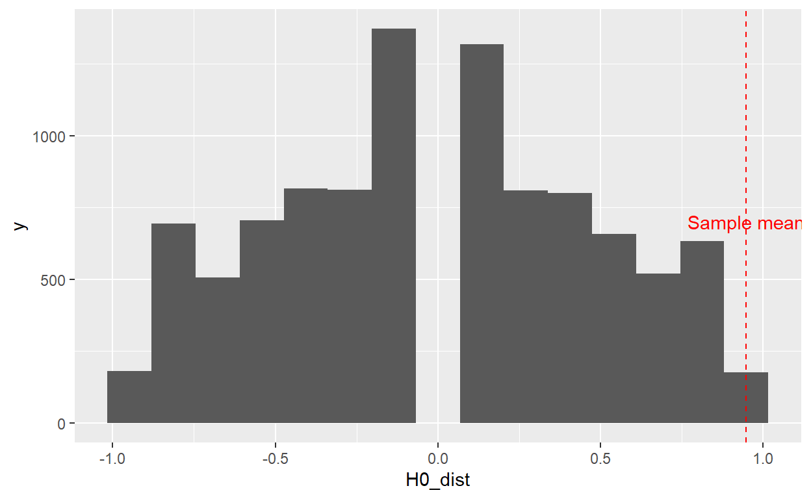

מבחנים א-פרמטרים - מבוא
בשיעור זה אנחנו נלמד איך לבצע מבחנים סטטיסטיים שנקראים מבחנים
א-פרמטרים.
כלומר, המבחנים שלמדנו עד עכשיו הם מבחנים פרמטרים. אתם בטח שואלים למה
אנחנו בכלל צריכים מבחנים שאינם פרמטריים?
כמו שהבנתם עד עכשיו, יש מקרים בהם לא נוכל לבצע את המבחנים שלמדנו עליהם
עד עכשיו, כאשר הנחות המבחן לא מתקיימות.
במבחן t למשל אנחנו מניחים שהתפלגות האוכלוסיה היא נורמלית. נניח ודגמנו
מדגם של משתנה כלשהו וגילינו שהנחת הנורמליות לא מתקיימת, לא נוכל לבצע
מבחן t ולהסיק הסקות לגבי המדגם כך. אבל בשיטות א-פרטריות נוכל עדיין לבצע
בדיקת השערות.
הנה כמה דוגמאות למקרים בהם נרצה לבצע מבחן א-פרמטרי:
- ידוע כי המשתנה לא מתפלג נורמלית.
- גודל המדגם קטן מידי.
- לא ניתן להניח התפלגות דגימה נורמלית לסטטיסטי (למשל אם נרצה לבצע בדיקה
של החציון או של אחוזון מסוים).
חשוב להבהיר, שזה לא שהמבחנים הא-פרמטרים פחות טובים אלא פשוט לא נשענים על אותן הנחות. בגדול כאשר ההנחות מתקיימות ההחלטות של שני סוגי המבחנים אמורות לצאת דומות מאוד.
Bootstrap
משמעות המונח בוטסטרפ לקוחה מהמשפט ל”משוך את עצמך באמצעות רצועות
המגפיים שלך”. כלומר, להצליח בתנאים בלתי אפשריים, לייצר יש מאין. זה בדיוק
מה שנעשה בשיעור הזה. יש לנו מדגם וסטטיסטי שמתאר אותו. אבל לא נוכל להניח
התפלגות נורמלית של המשתנה ולכן לא נוכל להסתמך על התפלגויות ידועה ואנחנו
נצטרך לייצר את ההתפלגות המלאה יש מאין.
באמצעות בוטסטרפ נוכל לדמות את ההתפלגות של המשתנה על סמך נתוני המדגם ללא
צורך בהסתמכות על הנחות לגבי צורת ההתפלגות של המשתנה. לצורך הסימולציה של
התפלגות הבוטסטרפ נצטרך להשתמש בלולאות.
נתחיל עם דוגמה פשוטה עם נתונים מדומים. אנחנו נרצה שהלולאה בעצם תחזור
על עצמה ככמות האיטרציות הרצויה (למשל מינימום 1000, אבל במקרים רבים אולי
נשאף ליותר חזרות). בכל חזרה של הלולאה נדגום מדגם חדש מתוך המדגם הקיים.
שימו לב - הדגימה פה צריכה להיות עם החזרה. כך שיכול להיות שיווצר לנו מדגם
שכולל רק תצפית אחת מתוך המדגם הרבה פעמים, מדגם שזהה למדגם המקורי והרבה
מדגמים שמשלבים סט חלקי של תצפיות מתוך המדגם המקורי. לפני שנבנה את הלולאה
בואו נראה איך נראית הדגימה עצמה, לשם כך נשתמש בפונקציה
sample.
תזכורת לגבי הארגומנטים (קלטים) שהפונקציה יכולה לקבל:
x - וקטור המכיל נתונים מהם יש לבצע דגימה
size - כמות התצפיות בכל דגימה (אם לא נכניס כלום הפונקציה
תדמה מדגמים בעלי גודל זהה לx)
replace - האם לבצע דגימה עם החזרה (TRUE) או בלי
(FALSE)
prob - מה ההסתברות של כל תצפית בנתונים המקוריים. אם לא
נכניס כלום הפונקציה תניח שכל תצפית היא בסבירות שווה.
# נתחיל עם מדגם היפוטתי פשוט מאוד
original_data <- c(1,2,3,4,5)
# נחשב את ממוצע המדגם
original_mean <- mean(original_data)
# ונציג אותו - זה הממוצע של המדגם המקורי שלנו
original_mean## [1] 3# כדי לדמות מדגמים אשר מסתמכים על המדגם המקורי נדגום ממנו
# נשתמש בדגימה עם החזרה
sampled_data <- sample(original_data, replace = TRUE)
# נצפה במדגם שקיבלנו
sampled_data## [1] 4 5 1 3 4# נחשב את הממוצע גם עבורו
sampled_mean <- mean(sampled_data)
# נדפיס
sampled_mean## [1] 3.4מעולה דימינו מדגם על בסיס הנתונים המקוריים, קיבלנו ממוצע אחר מהממוצע המקורים עבור הדגימה הזאת.
לולאת הבוטסטראפ
השלב הבא יהיה לחזור על התהליך 1000 פעמים, לפחות.
מזל שלמדנו לולאות. בשיעורים הקודמים למדנו שכל חזרה על לולאה נקראית
איטרציה, כדי לבצע מבחן בוטסטרפ צטרך לבצע מספר רב של איטרציות אבל נתחיל
מלהוסיף מעט חזרות, כדי שנוכל ממש לראות את התוצר של כל חזרה נתחיל עם 5
חזרות.
בואו נוסיף את הלולאה:
# נחזור לאותו המדגם עם הממוצע הידוע
original_data <- c(1,2,3,4,5)
original_mean <- mean(original_data)
# נקבע מה מספר החזרות
# נתחיל עם מספר קטן ונתקדם
n_iter = 5
# נפתח את הלולאה
# נשתמש פשוט בטווח של בין 1 למספר האיטרציות כדי לחזור התהליך
for (i in 1:n_iter){
# כדי לדמות מדגמים אשר מסתכמים על המדגם המקורי נדגום ממנו
# נשתמש בדגימה עם החזרה
sampled_data <- sample(original_data, replace = TRUE)
# נצפה במדגם שקיבלנו
sampled_data
# נחשב את הממוצע גם עבורו
sampled_mean <- mean(sampled_data)
# נדפיס
print(sampled_mean)
}## [1] 3.2
## [1] 3.6
## [1] 2.2
## [1] 3
## [1] 3הרצנו את הלולאה ועכשיו יכולנו לראות 5 מדגמים שונים כמובן ש5 ערכים הם עדיין לא התפלגות ממש. לכן נצטרך להוסיף עוד חזרות כדי לדמות את תפלגות הממוצע. לשם כך אנחנו צריכים לשמור את הממוצעים של המדגמים המדומים בוקטור.
שמירת והצגת התוצאות
עכשיו כשנתחיל לעבוד עם חזרות רבות יותר נצטרך לקחת בחשבון את
יעילות הריצה. הביצוע של פעולה מספר רב יותר של פעמים יכולה
להעמיס על המחשב. לכן נצטרך לקחת את זה בחשבון. למשל הדפסה של נתונים רבים
בכל סיבוב של הלולאה תגרום לעומס ותאט את הפעילות. זה לא משפיע כמעט בכלל
ב5 חזרות אבל ב10000 חזרות נרגיש את ההבדל. לכן נרצה לבחון את הקוד טוב טוב
ולוודא שהריצה תהיה חלקה וכי אנחנו מדפיסים תוך כדי הלולאה רק את מה שמאוד
הכרחי.
כמו כן, ניקח בחשבון את היעילות בעת שמירת הנתונים. ברמת העיקרון היינו
יכולים ליצור וקטור ריק בתחילת הלולאה ולהוסיף לו ערך אחד בכל סיבוב. תהליך
זה פחות יעיל חישובית, זה האמנם זניח כשמשתמשים ב5 איטרציות אבל ככל שנוסיף
איטרציות תהיה תוספת משמעותית יותר של זמן הריצה. עדיף ליצור וקטור ריק
שמכיל ערכים ככמות האיטרציות ולערוך ערך אחד כל פעם.
לשם כך נשתמש בפונקציה numeric() אשר מקבלת את מספר הערכים
הרצוי בוקטור ויוצרת וקטור מספרי המכיל אפסים.
בואו נשלים את התהליך:
set.seed(123)
# נחזור לאותו המדגם עם הממוצע הידוע
original_data <- c(1,2,3,4,5)
original_mean <- mean(original_data)
# נקבע מה מספר החזרות
# נתקדם למספר קצת יותר גדול
n_iter = 50
# ניצור את הוקטור שישמור את התוצאות
sampled_means <- numeric(n_iter)
# נפתח את הלולאה
# נשתמש פשוט בטווח של בין 1 למספר האיטרציות כדי לחזור התהליך
for (i in 1:n_iter){
# דגימה
sampled_data <- sample(original_data, replace = TRUE)
# בכל איטרציה נשמור את הממוצע של המדגם המדומה
sampled_means[i] <- mean(sampled_data)
}
# נדפיס את הממוצעים
sampled_means## [1] 2.6 3.0 3.2 2.4 2.2 3.8 2.2 3.2 4.2 2.2 2.8 2.0 3.6 2.0 3.6 2.8 3.2 2.2 3.4
## [20] 4.0 2.4 3.6 2.6 4.0 2.6 3.2 3.2 4.2 3.0 2.8 2.4 4.0 2.6 2.6 2.2 1.6 3.8 2.8
## [39] 3.2 2.2 2.8 3.0 3.4 4.0 2.0 2.6 3.4 3.0 3.2 2.8# בעצם יהיה יותר קל להציג אותם כהיסטוגרמה
# נשמור אותם בטבלה לטובת האיור
df <- data.frame(sampled_means=sampled_means)
#איור
hist_plot <- ggplot(df, aes(x=sampled_means))+geom_histogram(bins=5)
# נציג
hist_plot
# נוסיף לההתפלגות החדשה את הממוצע המקורי.
hist_plot + geom_vline(xintercept = original_mean, color ="red")
אנחנו יכולים לראות שממוצע המחקר המקורי נופל יחסית במרכז ההתפלגות והערך גם יחסית שכיח בהתפלגות המדומה. הערכים הפחות נפוצים הם ערכים סביב 1 ו5, שכן כדי לקבל מדגם שהממוצע שלו הוא 1 היה צריך לדגום במקרה את הערך 1 מתוך המדגם המקורי 5 פעמים (או את הערך 5 במקרה של ממוצע של 5). ההסתברות שמדגם כזה יתקבל היא יחסית נמוכה אבל אפשרית ולכן השכיחות של הממוצעים בשתי קצוות ההתפלגות נמוכה.
תרגיל
בתיבת הקוד למטה נתונים לכם נתונים מדומים של מדגם. כתבו קוד שהמחשב
התפלגות בוטסטרפ לחציון המדגם. כתבו את הקוד כך שהלולאה תייצר לנו התפלגות
על סמך 1000 חזרות. איירו את ההיסטוגרמה של התפלגות הבוטסטרפ של החציון
בהשוואה לחציון המקורי במדגם המדומה. והדפיסו את הממוצע של התפלגות
הבוטסטרפ.
הערה - הימנעו מלהדפיס משתנים תוך כדי הלולאה, זה יאט את זמן הריצה ויבצע המון הדפסות.
set.seed(123)
# נדמה נתונים מהתפלגות נורמלית
original_data <- rnorm(30 , mean=0, sd=2)
# חישוב החציון
original_median <-
# נקבע את הפרמטרים של לולאת הבוסטסטרפ
n_iter <-
# ניצור את הוקטור שישמור את התוצאות
sampled_medians <-
# בצעו את הלולאה כאן
# בצעו את האיור
hist_plot <-
# נדפיס את הממוצע
round(mean(sampled_medians),2)set.seed(123)
original_data <- rnorm(30 , mean=0, sd=2)
# חישוב החציון
original_median <- median(original_data)
# נקבע את הפרמטרים של לולאת הבוסטסטרפ
n_iter <- 1000
# ניצור את הוקטור שישמור את התוצאות
sampled_medians <- numeric(n_iter)
# בצעו את הלולאה כאן
for (i in 1:n_iter){
sampled_data <- sample(original_data, replace = TRUE)
sampled_medians[i] <- median(sampled_data)
}
df = data.frame(sampled_medians=sampled_medians)
# בצעו את האיור
hist_plot <- ggplot(df, aes(x=sampled_medians)) + geom_histogram(bins=10) + geom_vline(xintercept = original_median, color ="red")
hist_plot
round(mean(sampled_medians),2)רווח סמך עם בוטסטרפ
עד כה הבנו איך לייצר את התפלגות הבוטסטרפ אבל עוד לא ממש למדנו איך
להשתמש בה בפועל.
הבוסטרפ בעצם מייצר לנו התפלגות של מדד מרכזי במשתנה, בעזרת ההתפלגות נוכל
לחשב את רווח הסמך ולבחון למשל האם ממוצע המדגם שלנו שונה ממוצע המדגם תחת
השערת האפס.
בואו נראה דוגמאות:
נתחיל עם דוגמה פשוטה שכן משתמשת בהתלפגות נורמלית ונבנה עליה.
במקרה זה הסיבה שנבחר בחישוב הא-פרמטרי שלרווח הסמך היא שנרצה להשתמש
בחציון ולא בממוצע.
נניח שדגמנו את השכר של מי שלמד תכנות במהלך התואר הראשון 5 שנים לאחר סיום
התואר. המטרה הייתה לבחון איך לימודי תכנות השפיעו על השכר, השערת האפס היא
שחציון השכר של מי שלמד תכנות כחלק מלימודי התואר תהיה זהה לשכר החציוני
במשק (9100). בואו נבחן את ההשערה.
set.seed(123)
salary_data <- rnorm(300 , mean=11000, sd=8000)
# חישוב החציון
salary_median <- median(salary_data)
# נקבע את הפרמטרים של לולאת הבוסטסטרפ
n_iter <- 1000
# ניצור את הוקטור שישמור את התוצאות
sampled_medians <- numeric(n_iter)
# הלולאה
for (i in 1:n_iter){
sampled_data <- sample(salary_data, replace = TRUE)
sampled_medians[i] <- median(sampled_data)
}
# נחשב את רווח הסמך
# נקבע את רמת הבטחון
conf_level = 0.95
# נחשב את אלפא
alpha <- 1-conf_level
# נחשב הסף העליון והתחתון של רווח הסמך על סמך ההתפלגות
lower <- quantile(sampled_medians, alpha / 2)
upper <- quantile(sampled_medians, 1 - alpha / 2)
# נציג
paste0("the bootastaped CI is: ", round(lower), " - ", round(upper), " ILS")## [1] "the bootastaped CI is: 9296 - 11678 ILS"# נרצה להשוות את ההתפלגות לשכר החציוני
reference <- 9100
# נבדוק האם השכר החציוני במשק נמצא בתוך הרווח
if (lower > reference | upper< reference){
print("חציון השכר הארצי נמצא מחוץ לרווח הסמך ברמת בטחון של 95%")
} else {
print("ערך הייחוס נמצא בתוך רווח הסמך")
}## [1] "חציון השכר הארצי נמצא מחוץ לרווח הסמך ברמת בטחון של 95%"# עכשיו נציג את האיור
hist_plot<-ggplot(data.frame(sampled_medians = sampled_medians), aes(x = sampled_medians)) + geom_histogram(binwidth = 300) +
geom_vline(xintercept = salary_median, color = "red", linetype = "dashed") +
geom_vline(xintercept = c(lower, upper), color = "green") +
geom_vline(xintercept = reference, color = "blue") +
annotate("text", x = salary_median, y = 10, label = "Sample Median", color = "red") +
annotate("text",x = lower, y = 10, label = "Lower CI", color = "green") +
annotate("text",x = upper, y = 10, label = "Upper CI", color = "green") +
annotate("text",x = reference, y = 200, label = "Reference", color = "blue") + xlab("Sampled Medians") + ylab("Frequency")
hist_plot
אם נתבונן יחד באיור נוכל לראות את ההתפלגות עצמה, יחד עם החציון
המקורי, השכר החציוני במשק (כחול) וגבולות רווח הסמך (ירוק).
אפשר לראות שהשכר החציוני במשק נמצא מחוץ לרווח הסמך.
האם זה באמת עובד?
משוכנעים שזה עובד?
אם לא, בואו נראה הדגמה. נוכל לקחת התפלגות שאיננה נורמלית, לדמות אוכלוסיה
שלמה. לאחר מכן נוכל לדגום מדגם בודד מתוך האוכלוסיה ולנסות לשחזר את
התפלגות הדגימה שלה באמצעות בוטסטרפ. נדמה אוכלוסיה דו שכיחית, בה ערכים
שקרובים ל0 לא נפוצים כל כך אבל ערכים סביב 3 ו -3 נפוצים במידה
דומה.
בואו נתחיל
set.seed(22)
# נדמה את האוכלוסיה באמצעות חיבור של שתי התפלגויות נורמליות
# נניח אוכלוסיה של 100000
n = 100000
dist = (c(rnorm(n/2, mean = -2, sd = 1), rnorm(n/2, mean = 3, sd = 1)))
# נשמור אותה בטבלה
dist_df <- data.frame(dist=dist)
# נציג איור של ההתפלגות
ggplot(dist_df, aes(x=dist)) + geom_histogram(bins =100)
# עכשיו ייצרנו פה מצב שיש לנו אוכלוסיה ידועה
# בואו נדגום ממנה מדגם
# נדגום בלי החזרה כדי לדמות מדגם בו כל אחד יכול להשתתף עד פעם אחת
original_sample <- sample(dist, 30, replace = FALSE)
# נחשב את הממוצע
original_mean <- mean(original_sample)
print(original_mean)## [1] 0.2759726# ועכשיו לבוטסטרפ
n_iter <- 10000
bootstrap_data <- numeric(n_iter)
# נבצע לולאה
for (i in 1:n_iter){
# נדגום עם החזרה מדגמים מתוך המדגם
temp_sampled <- sample(original_sample, replace = TRUE)
# נחשב את החציון לכל מדגם
bootstrap_data[i] <- mean(temp_sampled)
}
# נשמור את התפלגות הבוטסטרפ בטבלה
boot_dist_df <- data.frame(bootstrap_dist=bootstrap_data)
# נציג איור של ההתפלגות
ggplot(boot_dist_df, aes(x=bootstrap_dist)) + geom_histogram(bins =100)
# קיבלנו מתוך המדגם הבודד הערכה להתפלגות הדגימה של הממוצע מתוך האוכלוסיה
# עכשיו נוכל להשוות אותה להתפלגות הדגימה התיאורטית
# על ידי דגימה של מספר רב של מדגמים מתוך ההתפלגות המקורית
# ניצור את הוקטור שישמור את התפלגות הדגימה
sampled_dist <- numeric(n_iter)
# נתחיל את הלולאה
for (i in 1:n_iter){
# נדגום ללא החזרה מדגמים של 30 משתתפים
sampled_data <- sample(dist, size=30, replace = FALSE)
# נחשב את ממוצע לכל מדגם
sampled_dist[i] <- mean(sampled_data)
}
# נוסיף את התפלגות הדגימה האמיתית לטבלת הבוטסטרפ כדי להשוות בינהן
boot_dist_df$sample_dist <- sampled_dist
# נמיר לפורמט ארוך
long_df <- gather(boot_dist_df, key="Dist", value="Mean")
# נציג איור של ההתפלגות
ggplot(long_df, aes(x=Mean, col=Dist)) + geom_histogram(fill="white", alpha=0.5, position="identity", bins =100)
# בואו נשווה אותן לממוצע של ההתפלגות האמיתית
print(paste0("The difference between original distribution and bootsrtap mean is: ", mean(bootstrap_data)-mean(original_mean)))## [1] "The difference between original distribution and bootsrtap mean is: 0.0102705815751651"print(paste0("The difference between original distribution and sample distribution means is: ", mean(sampled_dist)-mean(original_mean)))## [1] "The difference between original distribution and sample distribution means is: 0.217483314970383"# ואחת לשניה
print(paste0("The difference between distribution means is: ", mean(bootstrap_data)-mean(sampled_dist)))## [1] "The difference between distribution means is: -0.207212733395218"קיבלנו תוצאה קצת מדהימה! ממדגם אחד שדגם 30 משתתפים מתוך האוכלוסיה
כולה הצלחנו לשחזר כמט במדוייק את התפלגות הדגימה של האוכלוסיה, כפי שחולצה
מתוך האוכלוסיה. זאת למרות שאנחנו יודעים שהאוכלוסיה לא מתפלגת נורמלי.
בתיבה מטה נמצאת גרסה מתומצתת של הקוד. עכשיו אתם יכולים להתנסות
בעצמכם.
בצעו שני שינויים בקוד:
1. שנו את גודל הדגימה ל10 משתתפים והריצו את הקוד.
2. שנו את המדד המרכזי לרבעון הראשון (אחוזון 25).
set.seed(22)
# האוכלוסיה (אין צורך לשנות)
n = 100000
dist = (c(rnorm(n/2, mean = -2, sd = 1), rnorm(n/2, mean = 3, sd = 1)))
# דגימת מדגם
# אפשר לשנות את גודל המדגם באמצעות עריכה המשתנה הזה
sample_size <- 30
original_sample <- sample(dist, sample_size, replace = FALSE)
# חישוב המדד המרכזי
original_est <- mean(original_sample)
print(original_est)
# בוטסטרפ
n_iter <- 10000
bootstrap_data <- numeric(n_iter)
# נבצע לולאה
for (i in 1:n_iter){
temp_sampled <- sample(original_sample, replace = TRUE)
bootstrap_data[i] <- mean(temp_sampled)
}
# נשמור את התפלגות הבוטסטרפ בטבלה
dist_df <- data.frame(bootstrap_dist=bootstrap_data)
# התפלגות הדגימה
sampled_dist <- numeric(n_iter)
# נתחיל את הלולאה
for (i in 1:n_iter){
sampled_data <- sample(dist, size=sample_size, replace = FALSE)
sampled_dist[i] <- mean(sampled_data)
}
# ארגון בטבלה
dist_df$sample_dist <- sampled_dist
long_df <- gather(dist_df, key="Dist", value="Mean")
# איור המשווה בין שתי ההתפלגויות
ggplot(long_df, aes(x=Mean, col=Dist)) + geom_histogram(fill="white", alpha=0.5, position="identity", bins =100)
print(paste0("The difference between distribution means is: ", mean(bootstrap_data)-mean(sampled_dist)))Permutation test
מבוא
מבחן פרמוטציות דומה לבוטסטרפ, אך הוא מאפשר לנו ממש לבצע בדיקת
השערות.
נוכל להשתמש במבחן זה במקרה בו הנחות הסטטיסטיקה הפרמטרית מופרות (וגם אם
לא), רק שבמקום להשוות את סטטיסטי להתפלגות יידועה (למשל התפלגות t) אנחנו
נייצר התפלגות המייצגת את השערת האפס מנתוני המדגם הנוכחי.
משמעות המונח פרמוטציה הוא ביצוע של תהליך חזרתי, הכולל מספר איטרציות ובכל
איטרציה יש ערבוב של הנתונים. במקרה של מבחן פרמוטציות אנחנו נרצה לבצע
דווקא דגימה ללא החזרה, כך שכל תצפית במדגם המקורי תחזור על עצמה פעם אחת,
אך נדגום את הנתונים כך שגורם התלות עליו נרצה לבצע את המבחן מעורבב בצורה
אקראית.
מבחן פרמוטציות לשני מדגמים בלתי תלויים
קצת באוויר? זה רעיון מורכב, בואו נפרק אותו עם דוגמה ספציפית.
בואו נחזור לדוגמה שראינו לגבי שכר. למה דווקא שכר? בגלל שנתוני שכר נהוג
למדוד בחציון, שכן הממוצע עשוי להיות מוטה ולא לשקף את האוכלוסיה.
, עכשיו נרצה לבצע בדיקת השערות לגבי השאלה. נוכל לעשות זאת על ידי השוואה
של שתי קבוצות. נאסוף מדגם של סטודנטים שלמדו תכנות בתואר וכאלה שלא. השערת
האפס היא שאין הבדל בין הקבוצות ואילו ההשערה האלטרנטיבית שאפשר היה לנסח
היא שחציון השכר של מי שלמדו תכנות שונה משל אלה שלא.
עד כה, אמור להיות מוכר, כמו מבחן t. אבל כדי לבצע את המבחן בצורה
א-פרמטרית נצטרך בעצם ליצור את הנחת האפס באמצעות פרמוטציות ולהשוות אותה
למדגם הנוכחי.
ועכשיו נצלול אל תוך השערת האפס, מה היא מניחה?
בגדול היא מניחה שהחלוקה לקבוצות היא אקראית וחסרת משמעות. בעצם אם המשתנה
הבלתי תלוי חסר השפעה זה לא משנה מאיזה קבוצה נדגום, אנחנו נקבל אומדן זהה
לחציון.
איך נעשה את זה?
ההנחה הזאת בעצם אומרת שאם נאחד את שתי הקבוצות ונדגום מתוכן שתי קבוצות
שונות באופן אקראי התוצאה לא אמורה להיות שונה באופן מהותי מתוצאות המדגם
המקורי.
ועכשיו נוכל להקים את השערת האפס לתחיה על ידי ביצוע של לולאה.
# הנתונים נמצאים בטבלה
head(salary_df)# הסטטיסטי שלנו יהיה הפרש החציונים
median_diff <- median(salary_df$salary[salary_df$group=="programming"]) - median(salary_df$salary[salary_df$group=="no_programming"])
print(median_diff)## [1] 1636.481# נצייר את ההתפלגויות
ggplot(salary_df, aes(x=salary, col=group)) + geom_histogram(fill="white", alpha=0.5, position="identity",bins=50)
הנתונים שלנו משקפים מצב בו יש הבדל בין חציוני הקבוצות.
כלומר, הפרשי החציונים שהתקבלו אמורים להיות לא סבירים תחת השערת
האפס.
נתחיל בלהבין את ההגיון של הערבוב
# השערת האפס בעצם תדגום מחדש את החלוקה לקבוצות
# לכן יעזור לנו לייצר וקטור שמכיל את תוצאות שתי הקבוצות יחד
all_salary_data <- salary_df$salary
# נייצר גם משתנה שמכיל את גודל הקבוצות
group_size <- length(salary_df$salary)/2
# נוכל לערבב את הנתונים באמצעות אותה פונקציה
all_salary_temp <- sample(all_salary_data, replace = FALSE)
# שימו לב שעכשיו נדגום מדגמים באותו גודל ללא החזרה
# לכן ההבדל היחיד יהיה הסדר
# בואו נשווה את ה10 תצפיות הראשונות
# המקור
print(all_salary_data[1:10])## [1] 9318.289 11420.292 13768.719 9377.314 8489.016 12924.997 11140.286
## [8] 9277.424 14422.882 5842.745# הוקטור המעורבב
print(all_salary_temp[1:10])## [1] 7341.529 12632.438 6830.828 10163.193 12946.971 7417.176 8267.179
## [8] 12221.893 38706.000 9569.716# הן שונות אך באותו גודל
# בואו נוודא
print(length(all_salary_data)==length(all_salary_temp))## [1] TRUE# לאחר הערבוב אנחנו כבר לא יודעים מי שייך לאיזה קבוצה
# אז נקצה אותם אקראית
# יש כמה דרכים לעשות זאת, הדרך הפשוטה תהיה להכניס את החצי הראשון לקבוצה אחת ואת השני לקבוצה אחרת
temp_programing <- all_salary_temp[1:group_size]
temp_no_programing <- all_salary_temp[(group_size+1):nrow(salary_df)]
# יופי יש לנו מדגם מדומה
# נוכל לחשב את הפרש החציונים
temp_median_diff <- median(temp_programing) - median(temp_no_programing)
print(temp_median_diff)## [1] -164.2579זהו בעצם התהליך של פרמוטציה בודדת. קיבלנו הפרש חציונים קטן מאוד וזה מאוד הגיוני. בעצם ערבבנו את שתי הקבוצות והסיכוי לקבל כזה הפרש באקראי קטן יותר. ההבדל בפרמוטציה אחת יכול להיות קטן מאוד או גדול מאוד לכל כיוון, לכן פרמוטציה אחת לא מספקת לנו מענה. נרצה לדגום מספר גדול של מדגמים אקראים כדי לבנות התפלגות מלאה.
תרגיל
החציון היא רק דוגמה אחת. אם הייתה לנו השערה לגבי העשירון התחתון? (כלומר
שהאחוזון ה10 נופל במקומות שונים בין שתי ההתפלגויות). בצעו את השינויים
הדרושים בקוד כדי שהפעם ישמר ההפרש בין מיקום האחוזון ה10 בין שתי
הקבוצות.
רמז - השתמשו בפונקציה quantile()
set.seed(234)
# צרו וקטור
all_salary_data <-
# חשבו את גודל הקבוצה
group_size <-
# ערבבו אותו
all_salary_temp <- sample()
# חלקו לקבוצות
temp_programing <-
temp_no_programing <-
# חשבו והדפיסו את ההפרש במיקום האחוזון ה10
temp_quantile_diff <-
# הדפסה (לא לשנות)
print(as.numeric(round(temp_quantile_diff)))set.seed(234)
# צרו וקטור
all_salary_data <- salary_df$salary
group_size <- length(all_salary_data)/2
# ערבבו אותו
all_salary_temp <- sample(all_salary_data, replace = FALSE)
# חלקו לקבוצות
temp_programing <- all_salary_temp[1:group_size]
temp_no_programing <- all_salary_temp[(group_size+1):nrow(salary_df)]
# חשבו והדפיסו את ההפרש במיקום האחוזון ה10
temp_quantile_diff <- quantile(temp_programing, probs = 0.1) -quantile(temp_no_programing, probs = 0.1)
print(as.numeric(round(temp_quantile_diff)))עכשיו שהבנו את העיקרון של חישוב סטטיסטי על סמך חלוקה אקראית לקבוצות נוכל לעבור לחלק של ביצוע לולאת הפרמוטציות. העיקרון מאוד דומה לבוטסטרפ. בואו נראה:
# נקבע את הפרמטרים
n_iter <- 10000
# נאכסן את מספר התצפיות בכל קבוצה
group_size <- nrow(salary_df)/2
# ניצור את הוקטור שישמור את התוצאות
# שימו לב! במקרה זה המטרה היא לדמות את התפלגות האפס
H0_dist <- numeric(n_iter)
# הוקטור לערבוב
all_salary_data <- salary_df$salary
# הלולאה
for (i in 1:n_iter){
# נערבב את הנתונים
all_salary_temp <- sample(all_salary_data, replace = FALSE)
# החצי הראשון יהיה הקבוצה שלמדה תכנות
temp_programing <- all_salary_temp[1:group_size]
# והחצי השני יהיה קבוצה שלא
temp_no_programing <- all_salary_temp[(group_size+1):nrow(salary_df)]
# נחשב את הפרש החציונים
temp_median_diff <- median(temp_programing) - median(temp_no_programing)
#נאכסן את התוצאה
H0_dist[i] <- temp_median_diff
}
# עכשיו אנחנו יכולים לחשב את הסיכוי של התוצאה האמיתי תחת השערת האפס
median_diff <- median(salary_df$salary[salary_df$group=="programming"]) - median(salary_df$salary[salary_df$group=="no_programming"])
# נחשב מה הסיכוי לקבל תצפית כזאת קיצונית תחת השערת האפס
# כמה תצפיות גדולות יותר היו?
# נחלק את כמות התצפיות בגודל ההתפלגות
p <- sum(H0_dist >= median_diff)/length(H0_dist)
print(p)## [1] 0# קיבלנו 0
# עכשיו נציג את האיור
hist_plot<-ggplot(data.frame(H0_dist = H0_dist), aes(x = H0_dist)) + geom_histogram(bins = 100) +
geom_vline(xintercept = median_diff, color = "red", linetype = "dashed") +
annotate("text", x = median_diff, y = 10, label = "Sample Median", color = "red")
hist_plot
קיבלנו ערך מאוד מאוד קיצוני ביחס להתפלגות. מה המשמעות של זה? המשמעות היא שבכל 10000 הפעמים שערבבנו את הנתונים וחילקנו אותם לשתי קבוצות אקראיות לא התקבל הפרש חציונים כל כך קיצוני. אפשר להסיק מכך שההסתברות לקבל כזאת תוצאה היא מאוד לא סבירה תחת השערת האפס.
תרגיל
היחידה למחקר רצתה להבין האם יכול להיות שיש פער מגדרי בנתוני השכר. חזרו
על המבחן שביצענו והשוו את הפרשי החציונים בין המגדרים להתפלגות האפס
והדפיסו את ערך הp שהתקבל .
בדקו את ההפרש בין גברים לנשים (כלומר החסירו את משכורות הנשים משל
הגברים)
רמז - האם צריך לשנות משהו בלולאה עצמה?
set.seed(234)
n_iter <- 10000
group_size <- nrow(salary_df)/2
H0_dist <- numeric(n_iter)
all_salary_data <- salary_df$salary
# הלולאה
for (i in 1:n_iter){
# נערבב את הנתונים
all_salary_temp <- sample(all_salary_data, replace = FALSE)
# החצי הראשון יהיה הקבוצה שלמדה תכנות
temp_programing <- all_salary_temp[1:group_size]
# והחצי השני יהיה קבוצה שלא
temp_no_programing <- all_salary_temp[(group_size+1):nrow(salary_df)]
# נחשב את הפרש החציונים
temp_median_diff <- median(temp_programing) - median(temp_no_programing)
#נאכסן את התוצאה
H0_dist[i] <- temp_median_diff
}
# עכשיו אנחנו יכולים לחשב את הסיכוי של התוצאה האמיתי תחת השערת האפס
median_diff <-
p <- sum(H0_dist >= median_diff)/length(H0_dist)
# האיור
hist_plot<-ggplot(data.frame(H0_dist = H0_dist), aes(x = H0_dist)) + geom_histogram(bins = 100) +
geom_vline(xintercept = median_diff, color = "red", linetype = "dashed") +
annotate("text", x = median_diff, y = 10, label = "Sample Median", color = "red")
hist_plot
print(round(p,2))set.seed(234)
n_iter <- 10000
group_size <- nrow(salary_df)/2
H0_dist <- numeric(n_iter)
all_salary_data <- salary_df$salary
# הלולאה
for (i in 1:n_iter){
# נערבב את הנתונים
all_salary_temp <- sample(all_salary_data, replace = FALSE)
# החצי הראשון יהיה הקבוצה שלמדה תכנות
temp_programing <- all_salary_temp[1:group_size]
# והחצי השני יהיה קבוצה שלא
temp_no_programing <- all_salary_temp[(group_size+1):nrow(salary_df)]
# נחשב את הפרש החציונים
temp_median_diff <- median(temp_programing) - median(temp_no_programing)
#נאכסן את התוצאה
H0_dist[i] <- temp_median_diff
}
# עכשיו אנחנו יכולים לחשב את הסיכוי של התוצאה האמיתי תחת השערת האפס
median_diff <- median(salary_df$salary[salary_df$gender=="Male"]) - median(salary_df$salary[salary_df$gender=="Female"])
p <- sum(H0_dist >= median_diff)/length(H0_dist)
print(p)
# עכשיו נציג את האיור
hist_plot<-ggplot(data.frame(H0_dist = H0_dist), aes(x = H0_dist)) + geom_histogram(bins = 100) +
geom_vline(xintercept = median_diff, color = "red", linetype = "dashed") +
annotate("text", x = median_diff, y = 10, label = "Sample Median", color = "red")
hist_plotאפשר ללמוד מהתרגיל שני דברים חשובים: עם שינוי מאוד קטן בקוד יכולנו להשתמש באותה לולאה כדי לדמות את התפלגות האפס של שני מבחנים שונים. לכן האופן בו נשתמש בלולאות יכול לשמש אותנו במקרים רבים. כדי לעבור בין השערה חיובית לשלילית אפשר פשוט לשנות את האופן שבו אנחנו מחסירים את החציונים זה מזה.
מבחן לשני מדגמים מזווגים
עכשיו כבר יש לנו את העיקרון של ביצוע מבחן פרמוטציות. כל מה שנצטרך
לעשות כדי להתאים את התהליך למדגם למבחנים תלויים זה להבין איך לדמות את
השערת האפס הפעם.
ההבדל בהשערת האפס המתאימה למבחן מזווג היא שהשערת האפס לא כוללת בתוכה
ערבוב של זהות הזוגות.
למשל אם נתרגם את הדוגמה המקורית שלנו למבחן מזווג, נוכל לבחון את ההשכר של
כל משתתף במדגם לפני ואחרי לימודי התכנות. לכל משתתף בעצם יש שתי תצפיות
שתלויות זו בזו. את זהות הנבדקים אנחנו לא נרצה לערבב, שכן גם תחת השערת
האפס לא כוללת בתוכה את ההנחה שאין קשר בין תצפיות של אותו הנבדק אלא רק
שאין משמעות לסדר - מה הייתה המדידה שלפני ומה הייתה המדידה שאחרי
המניפולציה.
אחרי שהבנו מה צריך לעשות, בואו נראה איך. נתחיל מדוגמה מאוד פשוטה כדי להבין.
set.seed(156)
# יש לנו פה קבוצה שיש בה ערכים שונים לפני המניפולציה
before <- c(100, 7, 55, 208, 19)
# ועכשיו קבוצה שניה בה הערכים לאחר המניפולציה
after <- c(122, 17, 65, 230, 42)
# כל אחד מערכי הקבוצה עלה
# במבחן כזה בעצם נרצה להשוות את ממוצע ההפרשים ל0
diff <- after-before
print(mean(diff))## [1] 17.4# עכשיו שימו לב!
# נרצה לדגום באקראי אך בלי לנתק את הקשר שבין התצפיות
# דרך אחת לעשות זאת היא על ידי שימוש בלולאה שמבצעת את הערבוב לכל נבדק
# ניצור וקטורים שיאכסנו את הנתונים המעורבבים
temp_before <- numeric(length(before))
temp_after <- numeric(length(after))
# נעבור על הנבדקים אחד אחד
for (s in 1:length(before)){
sub_data_temp <- c(before[s], after[s])
# נערבב את הנתונים
sub_salary_temp <- sample(sub_data_temp, replace = FALSE)
# התוצאה תהיה שבחצי מהמקרים תוצאות הנבדק ישארו זהות ובחצי הסדר יתהפך
# נכניס את הערכים לוקטורים
temp_before[s] <- sub_salary_temp[1]
temp_after[s] <- sub_salary_temp[2]
}
# נסתכל על ההבדל
print("Original Before Vector: ")## [1] "Original Before Vector: "print(before)## [1] 100 7 55 208 19print("Shuffled Before Vector: ")## [1] "Shuffled Before Vector: "print(temp_before)## [1] 122 7 55 208 42# חלק מהתצפיות הוחלפו בתצפית שאחרי המניפולציה
# נתבונן בהשפעה על ההפרשים
print("Original Difference Vector: ")## [1] "Original Difference Vector: "print(after-before)## [1] 22 10 10 22 23print("Shuffled Difference Vector: ")## [1] "Shuffled Difference Vector: "print(temp_after-temp_before)## [1] -22 10 10 22 -23# ואיך זה השפיע על ממוצע ההפרשים?
print(paste0("Original Difference Mean: ", mean(after-before)))## [1] "Original Difference Mean: 17.4"print(paste0("Shuffled Difference Mean: ", mean(temp_after-temp_before)))## [1] "Shuffled Difference Mean: -0.6"עכשיו יש לנו את תהליך הערבוב. כל מה שנשאר זה להוסיף את הלולאה.
תרגיל
בתיבת הקוד קיים לכם הקוד שהודגם למעלה. הוסיפו את הלולאה החיצונית והריצו
אותה (כמספר הפרמוטציות שמוגדרות בתיבה).
לסיום, חשבו מה הסיכוי שיתקבל הקוטור המקורי תחת התפלגות האפס המדומה.
set.seed(156)
# הנתונים המקוריים
before <- c(100, 7, 55, 208, 19)
after <- c(122, 17, 65, 230, 42)
diff <- after-before
# הגדרת כמות הפרמוטציות
n_iter <- 1000
# ניצור וקטור שיכיל את התפלגות האפס
H0_dist <- numeric(n_iter)
# הוסיפו את הלולאה כאן
# הלולאה הפנימית
temp_before <- numeric(length(before))
temp_after <- numeric(length(after))
# נעבור על הנבדקים אחד אחד
for (s in 1:length(before)){
sub_data_temp <- c(before[s], after[s])
# נערבב את הנתונים
sub_salary_temp <- sample(sub_data_temp, replace = FALSE)
# התוצאה תהיה שבחצי מהמקרים תוצאות הנבדק ישארו זהות ובחצי הסדר יתהפך
# נכניס את הערכים לוקטורים
temp_before[s] <- sub_salary_temp[1]
temp_after[s] <- sub_salary_temp[2]
}
# בסיום הריצה של הלולאה הפנימית צריך לחשב את הסטטיסטי של המדגם המדומה
# במקרה זה נחשב את ממוצע ההפרשים בין הוקטורים המדומים ונאכסן בוקטור
# סגרו את הלולאה כאן
# חשבו את הסיכוי לקבל את המדגם המקורי תחת השערת האפס
p <-
# עכשיו נציג את האיור
hist_plot<-ggplot(data.frame(H0_dist = H0_dist), aes(x = H0_dist)) + geom_histogram(bins = 10) +
geom_vline(xintercept = mean(diff), color = "red", linetype = "dashed") +
annotate("text", x = mean(diff), y = 10, label = "Sample mean", color = "red")
hist_plot
# הדפסה
print(round(p,2)set.seed(156)
# הנתונים המקוריים
before <- c(100, 7, 55, 208, 19)
after <- c(122, 17, 65, 230, 42)
diff <- after-before
# הגדרת כמות הפרמוטציות
n_iter <- 1000
# ניצור וקטור שיכיל את התפלגות האפס
H0_dist <- numeric(n_iter)
# הוסיפו את הלולאה כאן
for(i in 1:n_iter){
# הלולאה הפנימית
temp_before <- numeric(length(before))
temp_after <- numeric(length(after))
# נעבור על הנבדקים אחד אחד
for (s in 1:length(before)){
sub_data_temp <- c(before[s], after[s])
# נערבב את הנתונים
sub_salary_temp <- sample(sub_data_temp, replace = FALSE)
# התוצאה תהיה שבחצי מהמקרים תוצאות הנבדק ישארו זהות ובחצי הסדר יתהפך
# נכניס את הערכים לוקטורים
temp_before[s] <- sub_salary_temp[1]
temp_after[s] <- sub_salary_temp[2]
}
# בסיום הריצה של הלולאה הפנימית צריך לחשב את הסטטיסטי של המדגם המדומה
# במקרה זה נחשב את ממוצע ההפרשים בין הוקטורים המדומים ונאכסן בוקטור
H0_dist[i] <- mean(temp_after-temp_before)
# סגרו את הלולאה כאן
}
# חשבו את הסיכוי לקבל את המדגם המקורי תחת השערת האפס
p <- sum(H0_dist >= mean(diff))/length(H0_dist)
# עכשיו נציג את האיור
hist_plot<-ggplot(data.frame(H0_dist = H0_dist), aes(x = H0_dist)) + geom_histogram(bins = 10) +
geom_vline(xintercept = mean(diff), color = "red", linetype = "dashed") +
annotate("text", x = mean(diff), y = 10, label = "Sample mean", color = "red")
hist_plot
# הדפסה
print(round(p,2))מבחן פרמוטציות עם ערך ייחוס
אפשר לחשוב על המבחן שביצענו פה מזווית אחרת. בעצם הסטטיסטי שלנו במבחן המזווג כדוגמת המבחן הנוכחי הוא ממוצע ההפרשים. כלומר מלכתחילה אפשר היה לבצע את המבחן על ההפרשים ולא על שתי הקבוצות.
ביצוע של המבחן באופן הזה משנה מעט את ביצוע שלו ואת הניסוח של השערת
האפס באופן קונקרטי, אך לא מהותית. השערת האפס היא עדיין שאין חשיבות לאיזה
תצפית הייתה לפני המניפולציה ואיזה אחריה ולכן תחת השערת האפס הכיוון של
ההפרש (האם מחסירים את הערך שלפני המניפולציה מהערך שאחריה) לא משנה.
אם נחשוב על זה מהזוית של ההפרשים אפשר לנסח את ההשערה גם כך - השערת האפס
היא שתוחלת ההפרשים היא אפס. כלומר אם נסתכל על הוקטור של ההפרשים הם
אמורים להתפזר אקראית סביב אפס. כלומר, הסימן (האם הערכים הם חיוביים או
שליליים) של ההפרשים הוא אקראי.
אם נחשוב על זה כך, נוכל לבצע את המבחן אחרת, ללא הלולאה הפנימית. נשתמש
בוקטור האמיתי של ההפרשים ובנוסף אליו נדגום אקראית וקטור בעל אורך זהה
שמכיל -1 ו1. נכפול את הוקטורים, מה שיגרום לכך שהסימן של חלק מההפרשים
יתהפך.
בואו נראה איך זה נראה:
set.seed(156)
# הנתונים המקוריים
before <- c(100, 7, 55, 208, 19)
after <- c(122, 17, 65, 230, 42)
diff <- after-before
# כמות הפרמוטציות
n_iter <- 1000
# וקטור התפלגות האפס
H0_dist <- numeric(n_iter)
# הלולאת הפרמוטציות
for(i in 1:n_iter){
# ניצור העתק של וקטור ההפרשים
temp_diff <- diff
# נדגום מקרית וקטור שמכיל 1 ו-1
# את הדגימה נבצע מתוך וקטור שמכיל רק 1 ו-1
# נדגום כמות ערכים כאורך הוקטור המקורי
# נצטרך דגימה עם החזרה כיוון שאנחנו דוגמים מוקטור שיש בו שני ערכים
temp <- sample(c(-1,1), length(diff), replace = TRUE)
# נכפול בין הוקטורים
temp_diff = temp_diff*temp
# נאכסן את ממוצע ההפרשים
H0_dist[i] <- mean(temp_diff)
}
# נחשב את ההסתברות לקבל את המדגם המקורי תחת השערת האפס
p <- sum(H0_dist >= diff)/length(H0_dist)
p## [1] 0.037# עכשיו נציג את התוצאה
hist_plot<-ggplot(data.frame(H0_dist = H0_dist), aes(x = H0_dist)) + geom_histogram(bins = 10) +
geom_vline(xintercept = mean(diff), color = "red", linetype = "dashed") +
annotate("text", x = mean(diff), y = 10, label = "Sample mean", color = "red")
hist_plot
גם במקרה הזה קיבלנו תוצאה מאוד מאוד דומה, לא זהה כיוון שיש רכיב אקראי. בעצם אם תריצו את אותו קוד פעמיים (ללא השורה של set.seed) תקבלו תוצאות קצת אחרות בכל פעם. זאת כיוון שהתהליך של הדגימה יהיה אקראי ולא בהכרח יחזור על עצמו בדיוק. אך מצד שני, כיוון שהנתונים המקוריים נשארים זהים ההבדלים לא אמורים להיות גדולים מאוד.
השאלה מחדדת לנו את החשיבות של כמות הפרמוטציות. החוזקה של מבחן זה היא שהיא יכולה לייצר את התפלגות האפס יש מאין, אבל ההתפלגות תהיה אמינה רק אם תהיה לנו כמות מינימלית של פרמוטציות. עכשיו שהבנו את נושא כמות הפרמוטציות נוכל להשתמש בעיקרון של השוואה לערך ייחוס כדי לבצע גם השוואה של הסטטיסטי של מדגם מסוים לערך ידוע. במקרה של וקטור ההפרשים השוונו לאפס שכן זאת ההשערה המתאימה.
עכשיו אנחנו יכולים לבחון שאלות כמו זאת: במפעל מסוים רצו לבדוק האם
המטבעות המיוצרים במפעל הינם מטבעות הוגנים. כלומר, האם הסיכוי לקבל “עץ”
שווה לסיכוי לקבל “פלי”. במפעל דגמו 30 מטבעות מפס היצור והטילו כל אחד מהם
10 פעמים וחישבו את הסיכוי לקבל “עץ” על פני החזרות. עכשיו אפשר להשוות את
המדגם לסיכוי של מטבע הוגן - 0.5.
ההתאמה היחידה שנצטרך לבצע היא בעצם למצוא את הדרך להפוך את ערך הייחוס ל0
שוב. נוכל לעשות זאת על ידי החסרה של ערך הייחוס מהנתונים עצמם.
תרגיל
כתבו את הקוד שיבצע מבחן פרמוטציות ויבדוק האם המטבע הוגן. הנתונים קיימים
כבר בסביבת העבודה שלכם בוקטור שנקרא: coin_sample. כל ערך בוקטור מייצג את
הסיכוי לקבל עץ על פני 10 חזרות לכל מטבע שנדגם.
set.seed(156)
# הנתונים
print(coin_sample)
# בצעו את ההתאמה כך שערך הייחוס יהיה אפס ולא 0.5
adj_coin_sample <-
# הגדרת כמות הפרמוטציות
n_iter <- 1000
# ניצור וקטור שיכיל את התפלגות האפס
H0_dist <- numeric(n_iter)
# לולאת הפרמוטציות
for (i in 1:length(n_iter)){
# מה הם הנתונים שנרצה לערבב?
# נתוני המדגם הנוכחי
temp_data <-
# דגמו וקטור שיהפוך את הסימן
temp <-
# נכפול בין הוקטורים
# נאכסן את הממוצע
}
# חשבו את הסיכוי לקבל את המדגם המקורי תחת השערת האפס
p <-
# הדפיסו אותו
print(p)
# עכשיו נציג את האיור
hist_plot<-ggplot(data.frame(H0_dist = H0_dist), aes(x = H0_dist)) + geom_histogram(bins = 10) +
geom_vline(xintercept = mean(adj_coin_sample), color = "red", linetype = "dashed") +
annotate("text", x = mean(adj_coin_sample), y = 10, label = "Sample mean", color = "red")
hist_plot
# הדפיסו אותו
print(round(p,1))set.seed(156)
# הנתונים
print(coin_sample)
# בצעו את ההתאמה כך שערך הייחוס יהיה אפס ולא 0.5
adj_coin_sample <- coin_sample -0.5
# הגדרת כמות הפרמוטציות
n_iter <- 1000
# ניצור וקטור שיכיל את התפלגות האפס
H0_dist <- numeric(n_iter)
# לולאת הפרמוטציות
for (i in 1:n_iter){
# מה הם הנתונים שנרצה לערבב?
# נתוני המדגם הנוכחי המתוקנים
temp_data <- adj_coin_sample
# דגמו וקטור שיהפוך את הסימן
temp <- sample(c(-1,1), length(adj_coin_sample), replace = TRUE)
# נכפול בין הוקטורים
temp_data = temp_data*temp
# נאכסן את הממוצע
H0_dist[i] <- mean(temp_data)
}
# חשבו את הסיכוי לקבל את המדגם המקורי תחת השערת האפס
p <- sum(H0_dist >= mean(adj_coin_sample))/length(H0_dist)
# עכשיו נציג את האיור
hist_plot<-ggplot(data.frame(H0_dist = H0_dist), aes(x = H0_dist)) + geom_histogram(bins = 10) +
geom_vline(xintercept = mean(adj_coin_sample), color = "red", linetype = "dashed") +
annotate("text", x = mean(adj_coin_sample), y = 10, label = "Sample mean", color = "red")
hist_plotמבחן פרמוטציות לקשר לינארי
המבחן האחרון שנלמד מאפשר לנו לבצע בדיקת מובהקות על קורלציה. כלומר, במקרה זה נוכל לחשב קורלציה בין שני משתנים ולהשוות את הקורלציה להתפלגות המדומה של השערת האפס שנייצר באמצעות פרמוטציות.
אז כמו שאתם בוודאי מנחשים אנחנו צריכים להבין מה היא השערת האפס שלנו
במקרה הזה כדי שנוכל לדמות אותה. במובן מסויים השערת האפס במקרה זה היא
הפוכה לזאת של מדגמים מזווגים. שכן גורם התלות שנרצה לנתק פה הוא הזיווג
בין התצפיות.
כלומר במקרה זה השערת האפס טוענת שהצימוד בין התצפיות הינו מקרי, בהינתן
שאין קשר לינארי בין שני המשתנים העובדה שקיבלנו ערך גבוה במשתנה אחד לא
נותנת לנו שום מידע על הערך שנקבל במשתנה השני.
בואו נראה דוגמה:
# נשתמש בדוגמה מאוד פשוטה
x <- c(1, 2, 3, 4, 5)
y <- c(11, 12, 12, 15, 16)
# נחשב את הקורלציה
corr_xy <- cor(x, y)
print(corr_xy)## [1] 0.9481224# קיבלנו קורלציה מאוד גבוהה.
# אבל יש לנו מעט מאוד תצפיות
# מה הסיכוי של קשר כזה במקרה?
# נבצע את המבחן
# כמות הפרמוטציות
n_iter <- 10000
# וקטור התפלגות האפס
H0_dist <- numeric(n_iter)
# לולאת הפרמוטציות
for(i in 1:n_iter){
# ניצור העתק של שני הוקטורים המקוריים
# אחד ישמור על צורתו המקורית
temp_x <- x
# ולשני נשנה את הסדר
temp_y <- sample(y, replace = FALSE)
# נאכסן את הקורלציה בין שני הוקטורים
H0_dist[i] <- cor(temp_x, temp_y)
}
# נחשב את ההסתברות לקבל את ההקורלציה במדגם המקורי תחת השערת האפס
p <- sum(H0_dist >= corr_xy)/length(H0_dist)
p## [1] 0.0177# עכשיו נציג את התוצאה
hist_plot<-ggplot(data.frame(H0_dist = H0_dist), aes(x = H0_dist)) + geom_histogram(bins = 15) +
geom_vline(xintercept = corr_xy, color = "red", linetype = "dashed") +
annotate("text", x = corr_xy, y = 700, label = "Sample mean", color = "red")
hist_plot
תרגיל מסכם
את התרגיל המסכם נבצע בrstudio. טענו לסביבת העבודה שלכם את הקובץ שמכיל
את נתוני מבחן הstroop, איתם עבדנו גם בשיעור האחרון.
קודם כל כללו בסקריפט שלכם את השורה הבאה:
set.seed(123) חשוב מאוד לכלול אותה ולהריץ אותה, אחרת
התשובות שתקבלו יכולות להיות שונות מהתשובות שלנו.
בכל המבחנים שנבצע בתרגיל זה נרצה להשתמש ב10,000 פרמוטציות. קבעו בראש
הקובץ שלכם גם את מספר זה על ידי הרצת השורה:
n_iter <- 10000
צרו טבלה אשר מסכמת את הדיוק הממוצע וזמן התגובה הממוצע עבור כל נבדק.
שאלה 1
בנו רווח סמך ברמת בטחון של 95% לדיוק הממוצע של הנבדקים באמצעות
בוטסטרפ.
שאלה 2
אחד החוקרים חשד שיש אפקט סדר במדגם, כך שככל שמספר הנבדק גבוה יותר כך
הדיוק גבוה יותר. בחנו את ההשערה באמצעות מבחן פרמוטציות.
שאלה 3
ועכשיו לאירוע המרכזי, חזרו לטבלה המקורית והוסיפו עמודה שמגדירה האם הצעד
היה תואם או לא תואם והאם. סננו תשובות שגויות ותשובות שזמן התגובה שלהן
מעל 1500 מילי שניות.
בצעו מבחן פרמוטציות לדגימות תלויות על אפקט הסטרופ.
משוב
בחלק זה נבקש את המשוב שלכם על הלומדה. אנא ענו בכנות וביסודיות, על מנת שנוכל להשתפר. התשובות ישמרו בצורה אנונימית ולא ישפיעו על בדיקת התרגיל עצמה.
הגשת התרגיל
סיימת? מעולה! עכשיו הגיע הזמן להגיש את התרגיל.
יש ללחוץ על הכפתור: Generate
להעתיק את הטקסט שמופיע בחלון למטה ולהגישו במודל
בהצלחה!
http://google.com